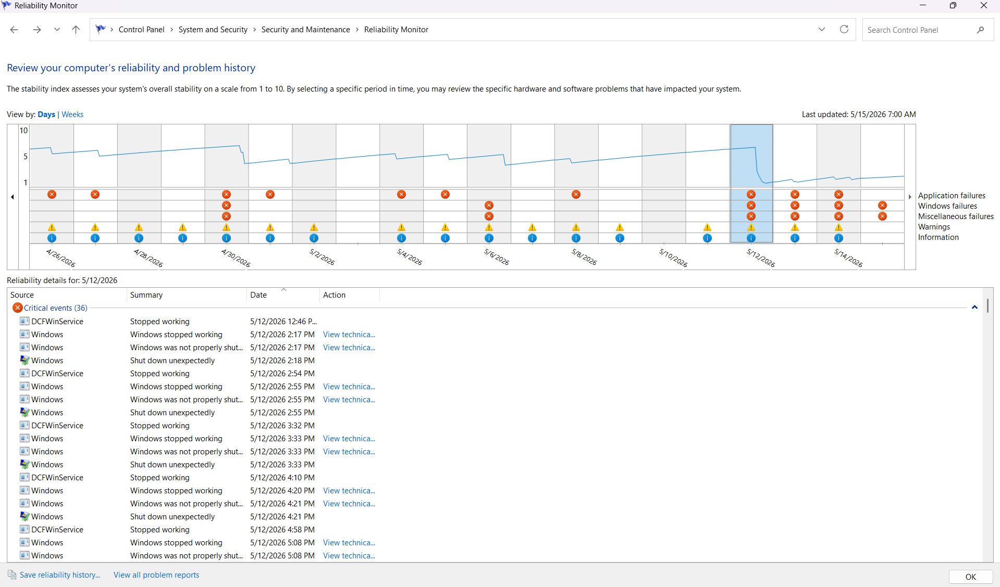
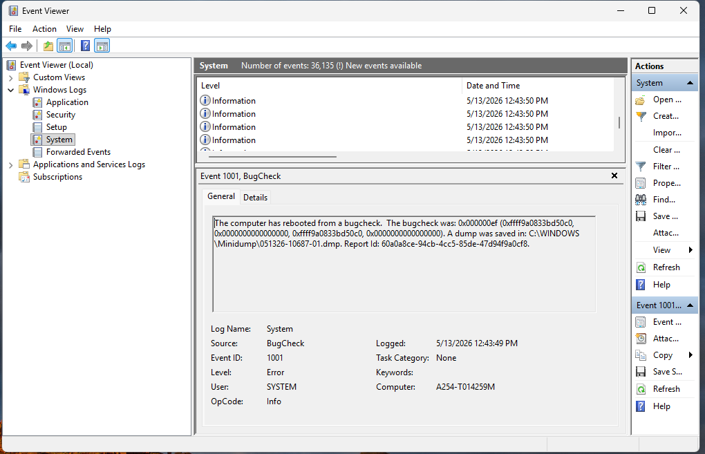
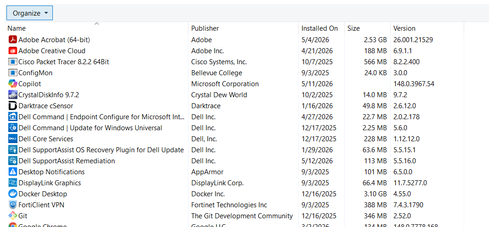

Recurring System Crash
Work the incident as a support team. Evidence is released as your investigation progresses.
Your investigation entries are saved in this browser and will be included in the final incident report.
Triage the Incident
The machine is available to your team only through collected evidence. Start by reviewing its reliability history.

Inspect the System Log
Your triage notes justify a closer review of Windows System events around the crash.

Analyze the Crash Dump
The event log confirms that Windows captured crash evidence. Use the real dump in WinDbg on your workstation.
1. Download the crash dump below and note where it is saved.
2. Launch WinDbg.
3. Select File → Open dump file.
4. Browse to
051326-10687-01.dmp, select it, and click Open.5. Allow the dump and symbols to finish loading.
6. In the initial analysis output, click the
!analyze -v link to run the detailed Bugcheck Analysis.Review the resulting analysis carefully. The Academy will ask you to extract evidence from the output; it will not identify the answer for you.
This is the captured
!analyze -v output from the affected computer. Analyze it exactly as you would live WinDbg output.nt!KeBugCheckEx:
fffff801`e32fa330 48894c2408 mov qword ptr [rsp+8],rcx ss:0018:ffff8582`c47f7840=00000000000000ef
14: kd> !analyze -v
Loading Kernel Symbols
...
*******************************************************************************
* Bugcheck Analysis *
*******************************************************************************
CRITICAL_PROCESS_DIED (ef)
A critical system process died
Arguments:
Arg1: ffff9a0833bd50c0, Process object or thread object
Arg2: 0000000000000000, If this is 0, a process died. If this is 1, a thread died.
Arg3: ffff9a0833bd50c0, The process object that initiated the termination.
Arg4: 0000000000000000, Additional triage data.
KEY_VALUES_STRING: 1
Key : Bugcheck.Code.LegacyAPI
Value: 0xef
Key : CriticalProcessDied.Process
Value: DellSupportAss
Key : Failure.Bucket
Value: 0xEF_DellSupportAss_IMAGE_DellSupportAss
Key : Failure.Hash
Value: {5da63506-8a26-c57d-a7e3-a4c3d622d05f}
BUGCHECK_CODE: ef
BUGCHECK_P1: ffff9a0833bd50c0
BUGCHECK_P2: 0
BUGCHECK_P3: ffff9a0833bd50c0
BUGCHECK_P4: 0
FILE_IN_CAB: 051326-10687-01.dmp
DUMP_FILE_ATTRIBUTES: 0x21808
Kernel Generated Triage Dump
FAULTING_THREAD: ffff9a0838adc080
PROCESS_NAME: DellSupportAss
CRITICAL_PROCESS: DellSupportAss
IMAGE_NAME: DellSupportAss
MODULE_NAME: DellSupportAss
FAULTING_MODULE: 0000000000000000
BLACKBOXBSD: 1 (!blackboxbsd)
BLACKBOXNTFS: 1 (!blackboxntfs)
BLACKBOXPNP: 1 (!blackboxpnp)
BLACKBOXWINLOGON: 1 (!blackboxwinlogon) (!blackboxwinlogonnotify)
CUSTOMER_CRASH_COUNT: 1
STACK_TEXT:
ffff8582`c47f7838 fffff801`e3578400 : 00000000`000000ef ffff9a08`33bd50c0 00000000`00000000 ffff9a08`33bd50c0 : nt!KeBugCheckEx
ffff8582`c47f7840 fffff801`e3743533 : ffff9a08`33bd50c0 00000000`00000000 00000000`00000000 fffff801`e328af51 : nt!PspCatchCriticalBreak+0x128
ffff8582`c47f78e0 fffff801`e3732447 : ffff9a08`33bd50c0 00000000`00000000 ffff9a08`33bd50c0 00000000`00000000 : nt!PspTerminateAllThreads+0x27f
ffff8582`c47f7960 fffff801`e38cdf11 : 00000000`00000000 00000000`00000001 ffff9a08`38adc080 ffff9a08`33bd50c0 : nt!PspTerminateProcess+0xf7
ffff8582`c47f79a0 fffff801`e34bd955 : ffff9a08`33bd50c0 ffff9a08`38adc080 01dce303`1dd921ec 00630000`00000295 : nt!NtTerminateProcess+0x121
ffff8582`c47f7a20 00007ffa`52e62084 : 00000000`00000000 00000000`00000000 00000000`00000000 00000000`00000000 : nt!KiSystemServiceCopyEnd+0x25
0000007b`73bffda8 00000000`00000000 : 00000000`00000000 00000000`00000000 00000000`00000000 00000000`00000000 : 0x00007ffa`52e62084
STACK_COMMAND: .process /r /p 0xffff9a0833bd50c0; .thread /r /p 0xffff9a0838adc080 ; kb
FAILURE_BUCKET_ID: 0xEF_DellSupportAss_IMAGE_DellSupportAss
OSPLATFORM_TYPE: x64
OSNAME: Windows 10
FAILURE_ID_HASH: {5da63506-8a26-c57d-a7e3-a4c3d622d05f}
Followup: MachineOwnerCrash Analysis Worksheet
Record exactly what WinDbg reports. Separate the debugger's evidence from your team's interpretation.
Correlate the Findings
Compare your WinDbg findings with the software actually installed on the affected machine.

Validate and Close
The machine has been returned to monitoring after remediation.
Stable
Stable
Stable
Stable